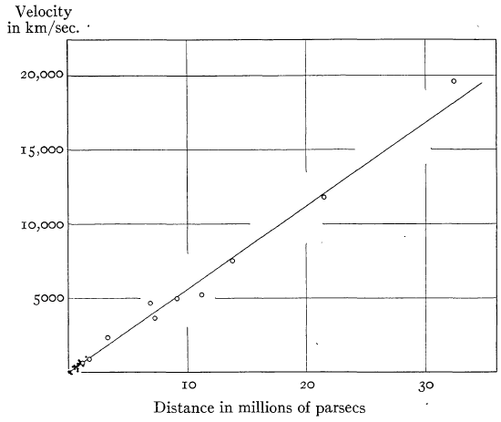
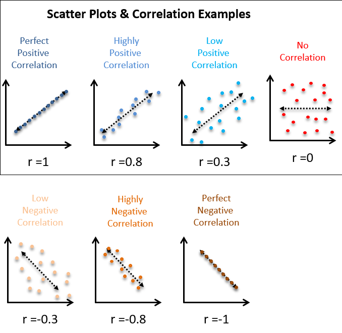

Correlation-Regression
Abdullah Al Mahmud
Correlation-Regression
Why This Chapter is Important
We knew the universe is expanding from the knowledge of this chapter!

We learn in this chapter
- How to make bread without wheat/flour
Scatter Plot

Sequence
Scatter Plot \(\rightarrow\) Correlation \(\rightarrow\) Regression
| Scatter Plot | Correlation | Regression |
|---|---|---|
| Preliminary idea about relationship | Measures linear relationship | Measures Influence |
| Either variable can be independent (usually) | Does not clarify dependency | Predicts dependent variable based on independent one. |
Correlation
Linear relationship between two variables
Corrleation, \(r = \frac{\sum (x_i - \bar x)(y_i - \bar y)}{\sqrt{\frac{\sum(x_i - \bar x)^2}{n}\frac{\sum(y_i - \bar y)^2}{n}}}; -1 \le r \le 1\)
- \(r = \frac{Cov(x,y)}{\sigma_x \sigma_y}\)
- Compare with \[\sigma ^2 = \sum_{i=1}^n \frac{(x_i-\bar x)^2}{n}\]
Scatter Plot And Correlation

\(r^2=R^2 \rightarrow\) Coefficient of determination
\(R^2 = 80\% \rightarrow\) 80% of total variation in Y (say, brightness of stars) can be explained by X (say, distance).
r: Estimating Mechanism
Make a table with columns for
- \((x_i-\bar x)\)
- \((y_i-\bar y)\)
- \((x_i-\bar x)(y_i-\bar y)\)
- \((x_i-\bar x)^2\)
- \((y_i-\bar y)^2\)
Then sum them and put in the formula
Example of r
Features of r
- Independent of origin and scale
- \(-1 \le r \le 1\)
- \(r = \sqrt{b_{yx} \cdot b_{xy}}\) (Concerning GM of regression coeff)
- \(\frac{b_{yx}+b_{xy}}{2} \ge r\) (About AM)
- \(r = 0 \rightarrow\) no linear relationship
Rank Correlation
| Competitor | Judge_1 | Judge_2 | rank_1 | rank_2 |
|---|---|---|---|---|
| 1 | 20 | 15 | 1 | 4 |
| 2 | 18 | 20 | 3 | 1 |
| 3 | 16 | 14 | 5 | 5 |
| 4 | 17 | 13 | 4 | 6 |
| 5 | 15 | 18 | 6 | 2 |
| 6 | 12 | 10 | 9 | 8 |
| 7 | 11 | 17 | 10 | 3 |
| 8 | 19 | 9 | 2 | 9 |
| 9 | 14 | 12 | 7 | 7 |
| 10 | 13 | 8 | 8 | 10 |
Coefficient, \(\rho = 1- \frac{6 \sum d_i^2}{n(n^2-1)}\)
Linear Equation/ Straight Lines
\(Y = c + mx;\) m is slope c is intercept
\(m = \frac{dy}{dx} = tan \theta=\) Change in y due to change in x.
Bread without sour or wheat!
Regression Coefficient
\(b_{yx} = \frac{\sum(x_i-\bar x)(y_i-\bar y)}{\sum(x_i-\bar x)^2} = \frac{Cov(x,y)}{\sigma_x^2}\)
SImpler, \(b_{yx} = \frac{\sum xy- \frac{\sum x \sum y}{n}}{\sum x^2 - \frac{(\sum x)^2}{n}}\)
\(b_{xy}=?\)
Example
| price | demand |
|---|---|
| 11 | 15 |
| 9 | 20 |
| 10 | 10 |
| 16 | 7 |
| 12 | 18 |
| 7 | 2 |
| 8 | 8 |
| 6 | 13 |
| 15 | 14 |
| 3 | 17 |
- Make a scatter plot and explain
- Find correlation and regression coefficient (r, a, & b) and explain
- Correlation, r = -0.06
- Regression (a, b): 13.26, -0.09
Properties of b
- independent of origin and scale
- \(r = \sqrt{b_{yx} \cdot b_{xy}}\)
- \(\frac{b_{yx}+b_{xy}}{2} \ge r\)
- If \(b_{yx} > 1, b_{xy} < 1\)
- If regression lines coincide, r = 1
- If \(\theta = 90^o, r = 0\)
Purity of Coefficients
- \(r = \frac{\sum (x_i - \bar x)(y_i - \bar y)}{\sqrt{\frac{\sum(x_i - \bar x)^2}{n}\frac{\sum(y_i - \bar y)^2}{n}}}\)
- \(\rho = 1- \frac{6 \sum d_i^2}{n(n^2-1)}\)
- b or \(\beta\)